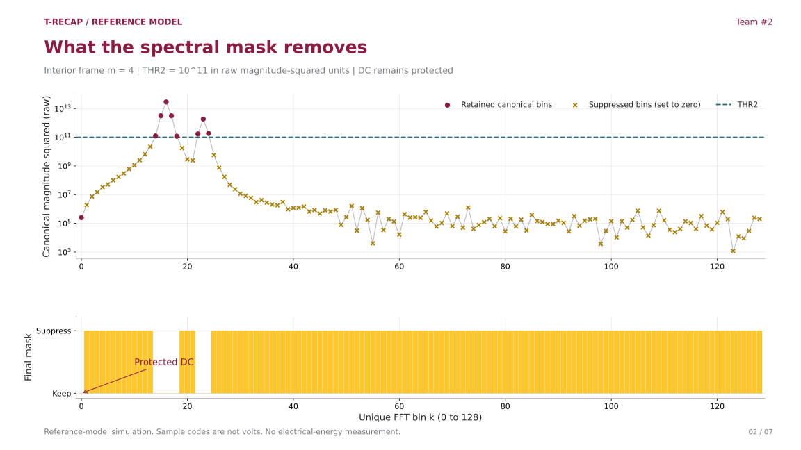
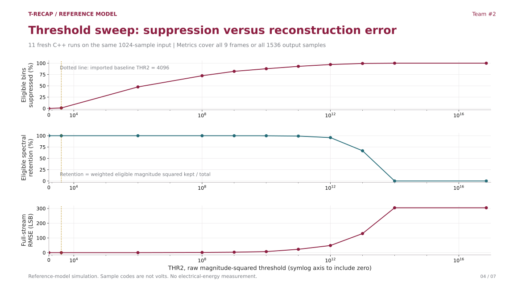
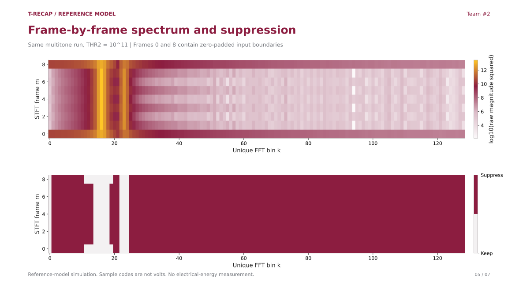
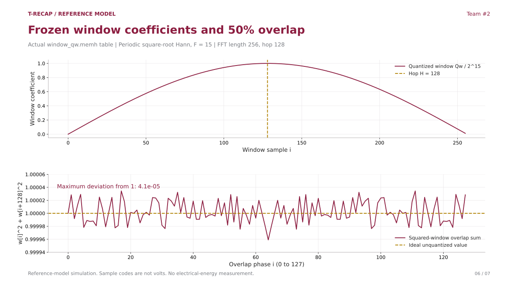
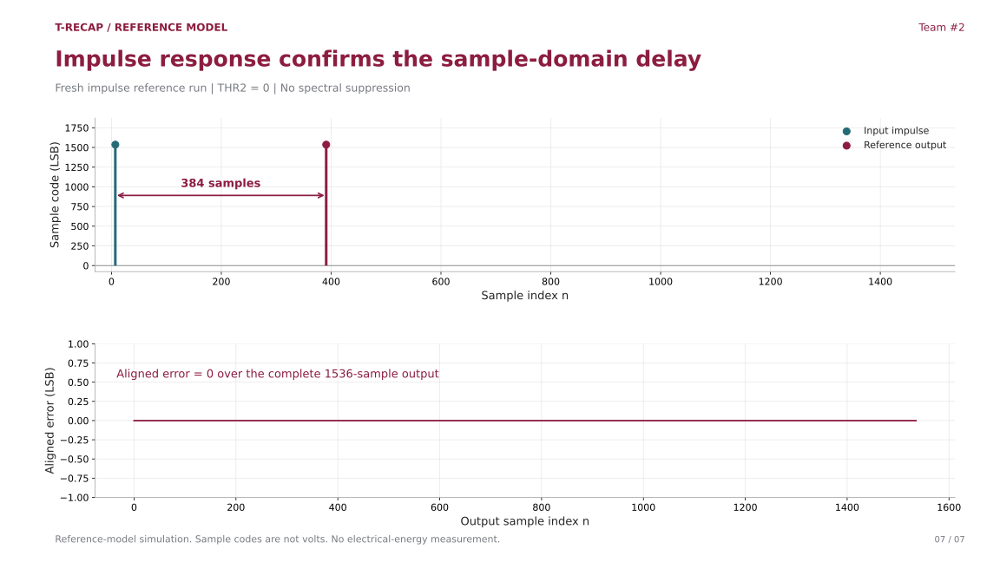

All figures use freshly executed C++ reference-model outputs. They do not establish FPGA correctness, hardware speedup, or electrical energy savings.
Spectrum and threshold decision

These are canonical pre-mask FFT bins from the C++ model, not an FFT of the entire output stream. An eligible bin is suppressed when magnitude squared is strictly less than THR2. The lower panel shows the actual final mask. Zero magnitudes use a display floor of 1 on the log plot.
PNG SVGThreshold tradeoff

At THR2=10^11, this vector suppresses 93.06% of eligible unique-bin instances and retains 99.21% of weighted eligible spectral magnitude squared, with 22.71 LSB full-stream RMSE. Spectral retention is a representation metric, not electrical energy saved.
PNG SVGSpectrum and mask across frames

The upper heatmap uses canonical pre-mask magnitudes with a log-display floor of 1. The lower heatmap shows exact binary mask decisions. Protected DC at k=0 stays kept. Frame index is not a hardware-clock or measured-time axis.
PNG SVGWindow and overlap-add coefficients

The top plot decodes the frozen coefficient table. The lower plot shows the quantized squared-window overlap sum, which is close to but not mathematically identical to one. This coefficient property supports reconstruction but is not a standalone proof for all signals.
PNG SVGImpulse diagnostic

The input and output impulses are separated by exactly 384 samples. At an assumed 48 ksample/s replay rate this design delay corresponds to 8 ms. This plot uses sample indices and does not measure hardware timing.
PNG SVG